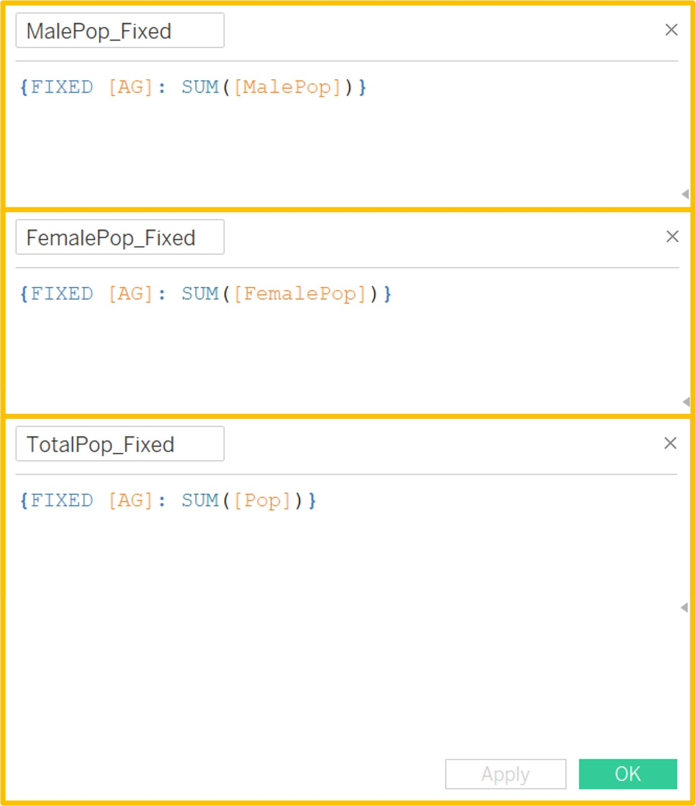

Take Home Exercise 1
Task
In this Take Home Exercise, age-sex pyramids across nine selected planning areas in trellis display are created using Tableau Desktop.
Data Source
The data “Singapore Residents by Planning Area / Subzone, Age Group, Sex and Type of Dwelling, June 2022” used for this Take Home Exercise is obtained from the Department of Statistics, Singapore in csv format.
Creating the Analytical Visualization on Tableau
| No. | Steps | Screenshot |
|---|---|---|
| 1 | Load the csv file into Tableau: Connect To a File > Text file. | |
| 2 | In a new Worksheet, Age is dragged to the Rows shelf. Since Age is already grouped into bins, it can be used as-is. The age groups are sorted in descending order: right-click on AG > Sort > Sort by Data Source Order - Descending. | |
| 3 | For a neater look of the final chart, the underscores (_) are removed from the labels: Data pane > right-click on AG > Aliases > Edit aliases accordingly. | |
| 4 | Prior to creating the age-sex pyramid, the Population field is split into two for each Gender: Analysis > Create Calculated Field. The calculated fields MalePop and FemalePop are created with the following formula:
|
|
| 5 | The proportion of males and females in the total population is then computed as calculated fields MalePct and FemalePct.
|
|
| 6 | Next, a reference line that shows the average percentage of male and female population for Singapore in each age group across all planning areas is created. Firstly, the calculated fields MalePop_Fixed, FemalePop_Fixed and TotalPop_Fixed. FIXED level of detail expressions are used in the calculation so that the values can be created without reference to the dimensions in the worksheet later on.
|
 |
| 7 | Again, the proportion of males and females in the total population is then computed as calculated fields MalePct_Fixed and FemalePct_Fixed.
|
|
| 8 | Next, the fields MalePct, MalePct_Fixed, FemalePct and FemalePct_Fixed are dragged to the Columns shelf. Right-click on MalePct_Fixed and FemalePct_Fixed in the the Columns shelf to create a dual axis. This will allow MalePct and MalePct_Fixed to use the same axis, as with FemalePct and FemalePct_Fixed. | |
| 9 | Right-click on the MalePct axis to reverse it and create the shape of the age-sex pyramid. | |
| 10 | As we have a dual axis between MalePct and MalePct_Fixed and between FemalePct and FemalePct_Fixed, right-click on each of the axis to synchronize axis. | |
| 11 | In the Marks card, MalePct and FemalePct are changed to a bar chart, and MalePct_Fixed and FemalePct_Fixed are changed to a line chart. |  |
| 12 | Next, drag MalePct to Color in the MalePct Marks card to create a colour gradient based on the values. At the top right-hand corner of the legend, right-click to select Edit Title and amend to “% Males” for better clarity. | |
| 13 | Similarly, drag FemalePct to Color in the FemalePct Marks card to create a colour gradient based on the values. At the top right-hand corner of the legend, right-click to select Edit Title and amend to “% Females” for better clarity. The colour is also changed to a contrasting colour orange: right-click top right hand corner of legend > Edit Colors > amend Palette to Orange. | |
| 14 | Under the MalePct_Fixed and FemalePct_Fixed Marks cards, amend the Size of the line and change the Marker under Color for ease of readability of the reference line in the chart. | |
| 15 | Change the chart view to Entire View. | |
| 16 | Drag the PA field to the Columns shelf and sort it based on population size: right-click to select Sort > Sort by Field – Sort Order of Descending – Field Name: Pop – Aggregation: Sum. Add the PA field and filter for the top nine most populous planning areas: right-click to select Edit Filter > select Top tab > filter By field – Top 9 by Pop – Sum. |
|
| 17 | Right-click on any x-axis and select Format to edit the number format on the scale for all four measures (MalePct, MalePct_Fixed, FemalePct and FemalePct_Fixed) shown in the chart. The number format is changed to Percentage – 1 decimal place. | |
| 18 | Right-click on the x-axis at the top of the chart to uncheck Show Header. | |
| 19 | Right-click on any x-axis and select Edit Axis. Change the Range to Fixed end (0.07) and remove the Axis Titles. | |
| 20 | Next, perform other formatting to the PA field: right-click on PA header > select Format > adjust the default font type (bold) and colour (black). Then right-click on PA header again > select Hide Field Labels for Columns so that only the planning areas are shown but not the field name. Also right-click on AG header > Hide Field Labels for Rows so that only the age groups are shown but not the field name. |  |
| 21 | Right-click on Sheet Title and select Edit Title to add a chart title and subtitle. | |
| 22 | Drag MalePct to Label in the MalePct Marks card to create mark labels. Click on Label and check the box for Show Mark Labels – change Scope to Pane. Then right-click on the mark label to format the number to Percentage – 1 decimal place. Repeat this step for the FemalePct Marks card. |
|
| 23 | Lastly, create a new Dashboard and drag the worksheet to the dashboard. The legends are dragged to the bottom of the dashboard. A text box is also added to include the data source. Lastly, change the Size to Automatic. |
Patterns observed in this Analytical Visualization
.jpg)
How to read the chart
The analytical visualization consists of age-sex pyramids for nine selected planning areas in Singapore presented in trellis display. The selection of planning areas is based on population size – the top nine most populous planning areas have been chosen.
Each pyramid starts at zero population in the centre and extends left for the male population (in blue) and right for the female population (in orange).
The bar charts within each pane shows the proportion of male and female population within the selected planning area.
Each bar in the pyramid represents a band of five years and is arranged from birth (at the bottom) to old age (at the top).
For comparison purposes, the grey reference line shows the average percentage of male and female population for Singapore in each age group across all planning areas.
Shape of age-sex pyramids
In general, all nine age-sex pyramids have relatively narrow bases, which is expected of a highly urbanized and developed country such as Singapore, where there is high life expectancy and low mortality and fertility rates.
Most of the top planning areas (except Punggol and Sengkang) have constrictive age-sex pyramids, which are characterized by urn-shaped graphs with a narrow base. This observation could be attributed to the presence of highly mature housing estates in these planning areas.
In contrast, the population pyramids of Punggol and Sengkang appear more “arrow-shaped” and are more characteristic of newer and younger housing estates, where bulk of the population falls within into two main age groups of 30-49 years and 0-19 years. This could be due to the trend of younger couples moving to newer housing estates like Punggol and Seng Kang over the past decade to start their own families.
Trends by age groups
The proportion of the younger population (0-19 years) in most planning areas is on par with the national average, except in Punggol and Sengkang where the proportion is above average.
For the working age population (20-59 years), the pyramid has a “bulging” out trend in Punggol and Sengkang. In contrast, there appears to be a “hollowing” effect especially in Tampines and Choa Chu Kang.
From the age of 60 onwards, the proportion of elderly in Bedok, Tampines and Hougang is above national average, while the reverse is true for Punggol, Sengkang, Woodlands and Choa Chu Kang.
Trends by gender
Between genders, population trends appear largely similar across the top planning areas except in Punggol where the male working age population appear to be on average, slightly older than their female counterparts.
In addition, among the extremely old (75 and older), the proportion of female population is observed to be greater than the male population. This trend is aligned with the gender gap in life expectancy that is observed both globally and locally.